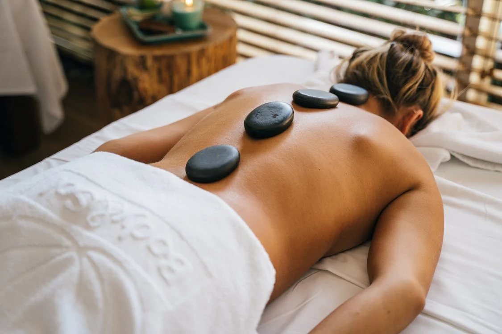
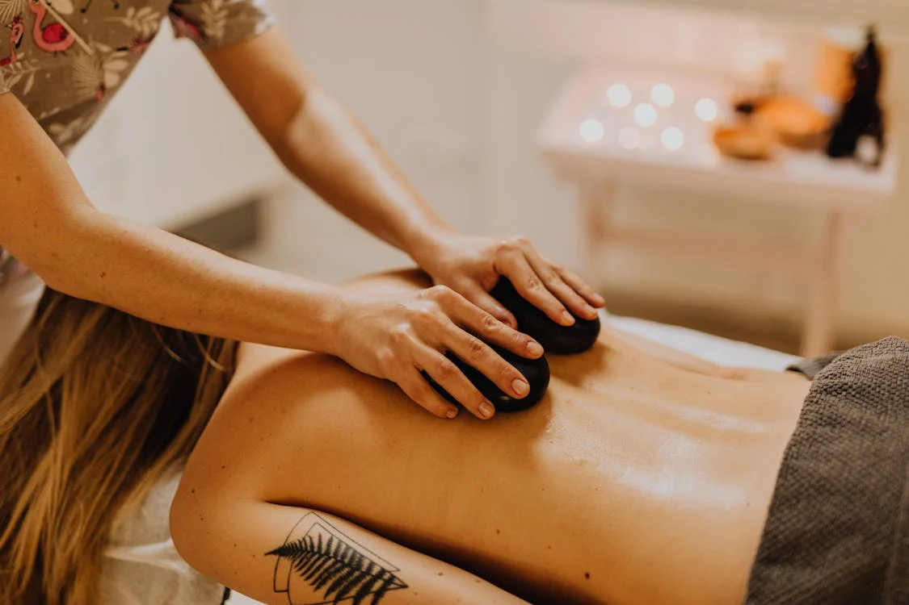

Dopřejte si chvilku klidu a relaxace
Masáže
Relaxační masáž
60 min / 850 Kč
Aromatická masáž
60 min / 850 Kč
Sportovní masáž
60 min / 850 Kč
Speciální nabídka
Relaxační masáž s lávovými kameny
Tato masáž spojuje jemné hmaty s teplem hladkých lávových kamenů, které prohřívají svaly do hloubky a napomáhají celkovému uvolnění těla i mysli. Ideální pro snížení stresu, odstranění napětí a navození hluboké relaxace.
Sportovní masáž s lávovými kameny
Kombinuje účinky klasické sportovní masáže s hloubkovým působením tepla z lávových kamenů. Uvolňuje namožené svaly, zlepšuje regeneraci a připravuje tělo na fyzickou zátěž. Vhodná nejen pro sportovce, ale pro každého s vyšším svalovým napětím.
